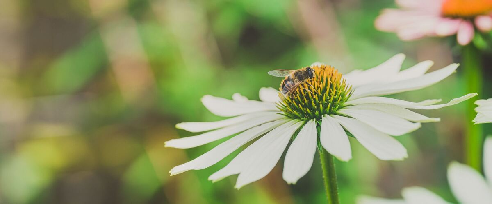

Flowers and pollinators · Oregon · Washington · Idaho
Native Plants for a Northwest Pollinator Garden
Red-flowering currant in March, asters in October: Northwest natives that keep bees and hummingbirds fed from late winter to fall.
A garden full of pollinators is a garden full of fruit. Bees, flies, butterflies and hummingbirds move pollen for squash, berries, apples and many other crops. The Northwest is home to hundreds of native bee species, and native plants are what they evolved with. Even a small border of natives next to the vegetable bed makes a difference.
Who's actually visiting your garden
When people picture a pollinator they usually think of honeybees, but in a Northwest garden much of the work is done by native bees you may never have noticed. Bumble bees are some of the most valuable. They can fly in cool, cloudy weather that keeps honeybees in the hive, which matters a lot in a drizzly west-side spring when fruit trees and blueberries are blooming. They also "buzz pollinate," shaking pollen loose by vibrating their flight muscles, which is especially good for blueberries and tomatoes.
The blue orchard mason bee, a small, shiny, dark blue native bee, flies for just a few weeks in early spring and is an excellent pollinator of apples, pears and cherries. Add sweat bees, mining bees, leafcutter bees, hover flies (the small striped flies that hover in place over flowers) and butterflies, and a single garden can host dozens of species over a season. Many are tiny, and most are solitary and gentle; they don't defend a hive the way honeybees and wasps do.
Plan for bloom from late winter to fall
Pollinators need food all season, not just in June, so pick plants that flower at different times. Here are reliable natives, roughly in bloom order:
- Red-flowering currant (Ribes sanguineum). A shrub with hanging pink flowers in late winter and early spring. One of the first hummingbird foods of the year.
- Oregon grape (Mahonia aquifolium). Oregon's state flower. Bright yellow spring flowers that native bees love, followed by tart blue berries.
- Camas (Camassia). Spring bulbs with tall spikes of blue flowers. They grow well in spots that are wet in winter.
- Western columbine (Aquilegia formosa). Red and yellow spring flowers for hummingbirds, happy in part shade.
- Mock orange (Philadelphus lewisii). A shrub covered in fragrant white flowers in early summer.
- Oregon sunshine (Eriophyllum lanatum). A tough, drought-tolerant perennial with yellow daisy flowers through early summer.
- Yarrow (Achillea millefolium). Flat clusters of small flowers that suit many small bees and beneficial insects. Very drought tolerant once established.
- Goldenrod (Solidago) and Douglas aster (Symphyotrichum subspicatum). Late summer and fall flowers when little else is blooming.
Garden sunflowers and single-flowered dahlias are also great additions near the vegetables. See flower planting times.
Planting tips
- Plant in fall. Northwest fall and winter rain settles natives in without much watering, and they're ready to grow in spring.
- Group the same plant together. A patch of one kind of flower is easier for bees to find and work than single plants scattered around.
- Water the first summer. Even drought-tolerant natives need regular water in their first dry season. After that, most need little or none.
- Buy from native plant nurseries or native plant sales, which often carry local forms of these species.
Leave room for nests
Flowers are only half of what pollinators need. Most native bees nest in the ground, in small patches of bare, undisturbed soil. Others, like the mason bees that pollinate fruit trees in spring, nest in hollow stems and holes in wood.
- Leave a sunny patch of bare soil unmulched.
- In fall, leave some flower stalks standing instead of cutting everything down. Many insects overwinter in them.
- Avoid insecticides on or near flowering plants. If you must treat a pest, spray in the evening when bees aren't flying, and never on open flowers.
If you put up a mason bee house, keep it clean. Nesting tubes reused year after year build up mites, fungus and parasitic wasps that can wipe out the bees. Use paper tube liners or removable wooden trays that you replace or clean each year, hang the house facing east or south under an overhang so it gets morning sun and stays dry, and make sure there's bare, damp mud nearby: mason bees use it to seal each egg chamber.
No room for a border?
A pollinator garden doesn't need to be big. A few large pots of yarrow, Oregon sunshine or annual flowers on a balcony will feed bees all summer. In the vegetable garden, let a few herbs flower: oregano, thyme, chives and cilantro in bloom draw in small bees and hover flies, and the hover fly larvae eat aphids. Let a couple of kale or broccoli plants bolt in spring and the yellow flowers will be covered in bees.
The lawn can help too. Letting clover and other low flowers bloom, and mowing a little less often, adds a surprising amount of food in a season. A shallow dish of water with a few stones for bees to land on gets plenty of visitors in a dry August.
A note on "bee-friendly" plants from the store
Some nursery plants are labeled as good for pollinators but are double-flowered varieties bred for extra petals. Many double flowers have little or no pollen or nectar that bees can reach. When choosing ornamentals, look for single flowers with an open center where you can see the pollen, like single dahlias, cosmos and asters. And if you can, ask the nursery whether plants were treated with systemic insecticides, which can end up in the pollen and nectar.